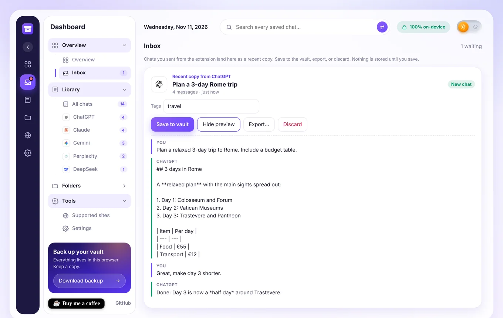
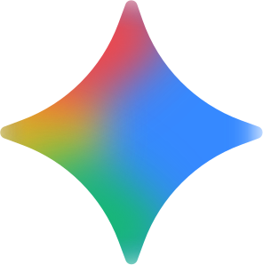
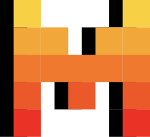
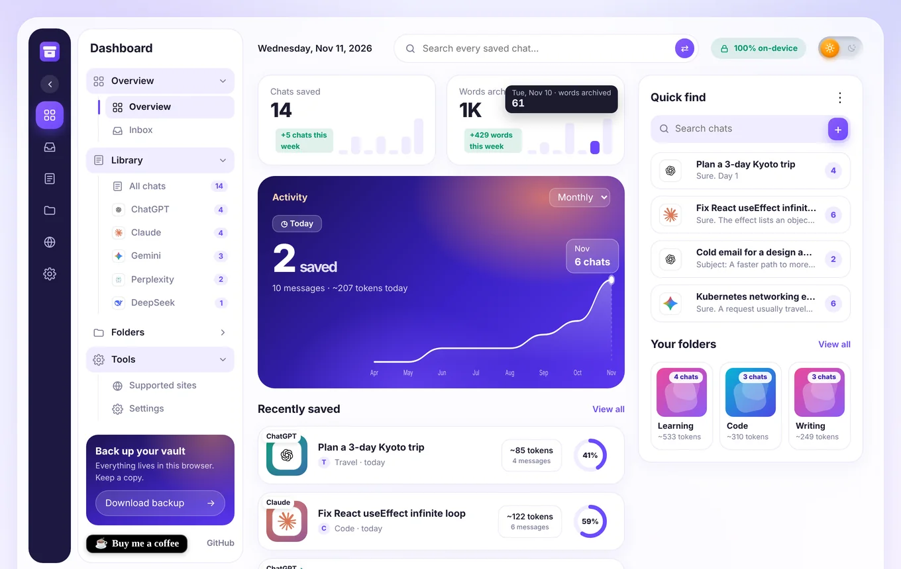

Your AI chats, filed away properly.
Archiv turns any AI conversation into a clean PDF, Word file, Markdown note or Notion page, and keeps a private searchable library on your own computer. No account. No server. No tracking.
- Word
- Image
- Markdown
- HTML
- JSON
- Text
- Notion
- Obsidian

- No account
- No server of ours
- No analytics or ads
- Open source
- Works offline once installed
From a chat to a file in three moves
Everything happens in one Archiv tab, so your browser never fills up with export windows.
Export this chat
Click the Archiv icon, press Alt+Shift+E, right-click the page, or use the small round button Archiv adds to AI sites.
Review it in the Inbox
The chat arrives as a “recent copy from ChatGPT” (or Claude, Gemini…). Preview it, check its suggested tags, then Save, Export or Discard.
Keep or share it
Pick a format, choose which messages to include, hide secrets, and download. Saved chats live in a searchable private library.
One tool for every AI chat you use
Archiv ships with a directory of 239 AI tools. Fifteen have hand-written selectors; every other chat page is handled by auto-detect, and you can teach Archiv a page by clicking one of your messages and one reply.

Gemini
Le ChatEverything you need, nothing you have to sign up for
Built for people who keep a lot of AI conversations and want them organised, portable and private.
One-tab Inbox
Exports land as “Recent copy from tool” cards in a single Archiv tab. Preview, save, export or discard. Nothing is stored until you say so.
Duplicate-aware saving
Export the same chat again and Archiv recognises it. Identical copies are replaced. If the chat grew, the new messages are appended and marked Updated inside the original.
Automatic topic tags
Up to four tags suggested from what the chat is about, such as coding, travel or finance. Edit them any time.
Nine formats
PDF, Word, image, Markdown, HTML, JSON, text, Notion and Obsidian, chosen from one tidy menu.
Redact before export
Mask API keys, tokens and passwords, plus optional emails and phone numbers, in the file and the preview.
Branded PDF
Clean themes (Light, Dark, Sepia, Sakura), a logo header and “Page n of N” footers.
Notion
Send chats as sub-pages, or as rows in a database with site, tags, date, message count and link.
Obsidian
Notes with frontmatter, tags and callouts, opened straight into your vault or zipped by folder.
Private library with find-in-chat
Search every saved chat, filter by site, folder or tag, then jump between matches inside a chat with highlights.
Pick exactly what to export
Click message headers to include or exclude them, shift-click for a range, or export only your prompts or only the AI’s answers.
Claude artifactsBeta
The artifact open beside a Claude chat is appended to the export.
Activity dashboard
Chats and words saved with per-day hover counts, an activity line that draws itself, recent chats and folders at a glance.
Light and dark
An animated sun and moon switch on every Archiv page, a collapsible sidebar and gentle motion.
Version 0.6: calmer, faster, easier on the eyes
The latest changes, all live in the current build.
New light / dark switch
A soft, tactile sun and moon switch in the top-right corner of the website, popup, dashboard and export page. Keyboard accessible, and your choice is remembered.
Hover a bar, watch it count
Chats saved and Words archived show each day’s real total, counting up from zero. Works with keyboard focus and taps too.
Activity line that draws itself
Hover the Activity card and the chart line traces itself in, smoothly and without moving the layout.
One-tab Inbox
Every export lands as a “Recent copy from” card. Preview it, save it, export it or discard it.
Smarter saving
Re-exporting a chat is recognised: identical copies are replaced and new messages are appended and marked Updated. Topic tags are suggested for you.
Backup & transfer menu
Backup, import, a ZIP of Markdown and a ZIP for Obsidian live in one tidy menu in the Library.
Notion, step by step
A beginner guide in Settings walks you through the integration, plus a database mode with one row per chat: site, tags, date, messages and link.
A calm dashboard for your chat archive
Screenshots are from the real v0.6 extension using sample chats. Hover a bar to see the count-up tooltip.

Totals, a monthly activity chart, recently saved chats, quick find and your folders.
The right file for the job
Code blocks, tables, lists and links are kept in every format.
| Format | Best for | Notes |
|---|---|---|
| Sharing and printing | Opens your browser’s print dialog; choose “Save as PDF”. Optional Archiv header and page numbers. | |
| Word (.docx) | Editing and handing in | Real Word styles for headings, code and tables. |
| Image (.png) | Social posts and slides | Long chats split into numbered parts in a ZIP. |
| Markdown | Notes and docs | Portable, readable anywhere. |
| HTML | A standalone page | Styled with your chosen theme. |
| JSON | Developers | Structured messages with roles. |
| Text | Plain copy | No markup at all. |
| Notion | Team wikis | Pages or database rows, sent straight from your browser. |
| Obsidian | Personal knowledge bases | Frontmatter, tags and callouts; ZIP per folder. |
Send chats where you already work
Both are optional. Nothing is connected until you set it up.
Notion, in five steps
- Create an integration at notion.so/profile/integrations (type Internal) and copy its secret.
- Make a page called “AI Chats” in Notion.
- Share it with your integration: ••• › Connections.
- Paste the secret and the page link into Archiv › Settings › Notion, choose pages or database, and press Connect and test.
- Export a chat, pick Notion, press Send to Notion.
A longer beginner guide with troubleshooting is built into Archiv’s Settings page.
Obsidian, in three steps
- Pick Obsidian as the format on the export page.
- Set your vault name and folder once (blank uses your last vault).
- Open in Obsidian: Archiv copies the note and opens a new-note link, or download a ZIP of your whole library with one subfolder per Archiv folder.
Notes include source, date and tags as frontmatter, and You / AI callouts.
Your conversations never touch our servers
There are no Archiv servers. Saved chats sit in your browser’s own database, and the only time anything leaves your device is when you choose to send a chat to your own Notion.
Read the privacy policy- On-device librarySaved chats are stored locally in IndexedDB. Delete them any time.
- No trackingNo analytics, no ads, no accounts, no remote code.
- Minimal permissionsCurrent tab on demand, local storage, a context-menu item, and optional access to api.notion.com.
- Notion token stays localIt is kept in local extension storage and never synced.
Get Archiv running in two minutes
Archiv works in Chrome, Edge, Brave and other Chromium browsers. It is not on the Chrome Web Store yet, so install it from GitHub.
Download and load it
- Download the latest
archiv-*.zipfrom GitHub Releases and unzip it. - Open
chrome://extensions(Edge:edge://extensions) and switch on Developer mode. - Click Load unpacked and choose the unzipped folder.
- Pin the Archiv icon, open an AI chat and press
Alt+Shift+E.
Or build from source
You need Node.js 18 or newer.
git clone https://github.com/socialmania99/archiv.git
cd archiv
bash tools/build-store.sh
# zip appears in dist/Or load the repository folder directly with Load unpacked.
Archiv is free and made by one person
If it saves you time, you can buy me a coffee. It helps cover the time spent keeping up with site changes. You can also star the project on GitHub or report a broken site.
Questions, answered
Is Archiv free?
Yes. It is free and open source. There are no paid tiers, quotas or accounts.
Does it send my chats anywhere?
No. Chats are read from the page you are viewing and kept on your device. The only exception is Notion: if you press Send to Notion, that chat goes from your browser straight to Notion’s API using your own token.
Which sites work?
ChatGPT, Claude, Gemini, DeepSeek, Grok, Perplexity, Copilot and others have built-in selectors, and a 239-tool directory covers many more. Any other chat page is handled by auto-detect. If it misses messages, use Teach Archiv: click one of your messages and one AI reply.
Are the built-in selectors tested on live sites?
AI sites change their pages often. Built-in selectors are marked in the Supported sites list and may need a tweak after a site update. Auto-detect, Teach Archiv and custom selectors are the safety net, and issues are welcome on GitHub.
What happens if I export the same chat twice?
Archiv detects it. An identical chat replaces the saved copy. If the chat has new messages, they are added to the original and marked Updated, and your tags and folder are kept.
How do I get a PDF?
Choose PDF and press Download. Your browser’s print dialog opens; pick “Save as PDF”. Archiv adds an optional header and page numbers.
Does it work in Firefox or Safari?
Not at the moment. Archiv is built for Chromium browsers (Chrome, Edge, Brave and similar).
Is Archiv affiliated with OpenAI, Anthropic, Google or the others?
No. Archiv is an independent project. Product names and logos belong to their owners and are used only to identify each service.
Give your AI chats a proper home
Free, private, and ready in two minutes.